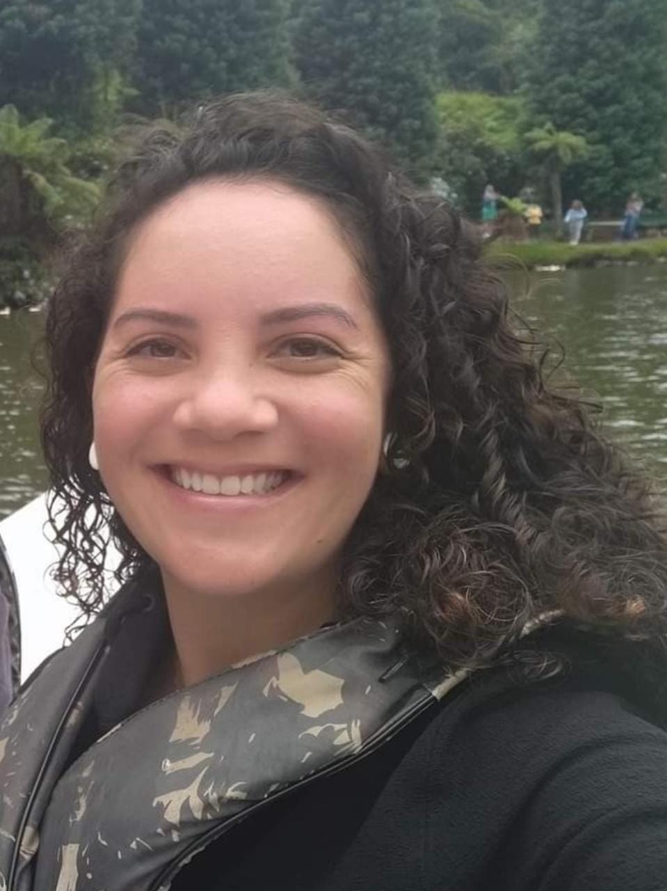
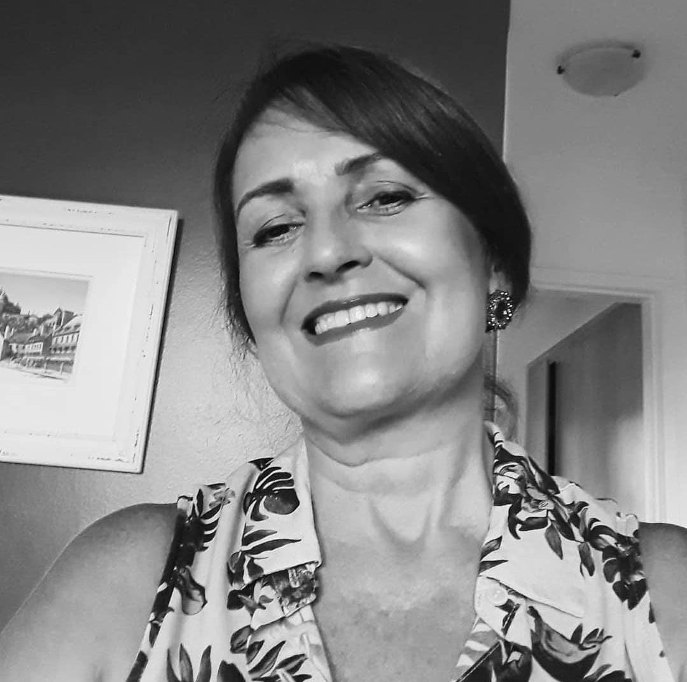
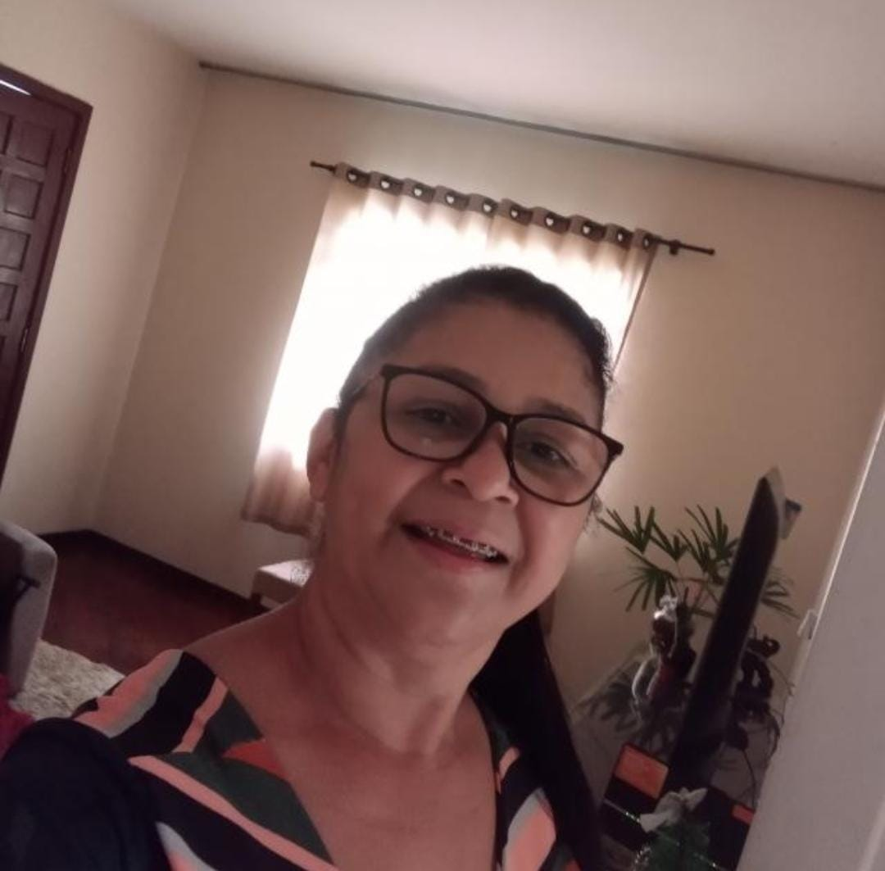

O caminho para a recuperação começa aqui
Fisioterapia e pilates humanizado e ao seu alcance.
Agendar um horárioFisioterapia e pilates humanizado e ao seu alcance.
Agendar um horário
Edilaine Gonçalves Bail formada em 2018 pela Universidade Tuiuti do Paraná, onde recebeu o premio ‘Sydnei Lima Santos' de aluna destaque.
Atuou por 1 ano em estágio extracurricular na clinica de Fisioterapia do Hospital da Polícia Militar, agregando ainda mais conhecimento na área.
Possui mais de 300 horas em Projeto de extensão voltado para saúde do Idoso. Preconiza atendimento de qualidade e humanizado de acordo com a necessidade de cada paciente buscando sempre a excelência.
Curso de Pilates completo e avançado;
Pós graduanda em Fisioterapia Traumato-ortopédica;
Treinamento Funcional;
Bandagem Terapêutica;
Eletrotermofoterapia;
Master Certification de Liberação miofascial (incluso: Avaliação e tratamento da dor lombar crônica), liberação manual e instrumental, crochetagem, ventosaterapia, auriculoterapia e craniopuntura.
Permite que o paciente realize o tratamento no conforto do seu lar, com maior flexibilidade de horários, individualizado e com a presença de seus familiares. Confira nossos serviços:
Atua na prevenção, pré e pós operatório dos distúrbios do sistema musculoesquelético, osteomioarticulares e tendões.
É uma técnica de massagem manual (DLM) que tem como objetivo estimular o sistema linfático a eliminar o excesso de fluidos do corpo, proporcionando diversos benefícios
Trata-se de uma técnica que consiste na estimulação mecânica de pontos específicos do pavilhão auricular. Para que isso ocorra, são utilizados materiais esféricos e de superfície lisa, como sementes que ficam pressionando esses pontos.
São conjuntos de exercício realizados no solo ou em equipamentos exclusivos, prevenindo e restaurando a saúde de indivíduos em condições patológica incluindo depressão e ansiedade, assim como promovendo um aumento da qualidade de vida para pessoas saudáveis.
A Liberação Miofascial é uma técnica que aplica pressão em alguns pontos do corpo, destivando os pontos gatilhos e como resultado relaxa e alonga os musculos para que haja maior liberdade entre o músculo e a fáscia.
Fisioterapia na Geriatria atua na prevenção e tratamento de alterações comuns do paciente idoso, o tratamento visa retardar a progressão de doenças já instaladas e atua na reabilitação, com o objetivo de preservar ao máximo sua autonomia, buscando a recuperação de sua independência funcional, procurando mantê-lo um cidadão ativo, participativo e produtivo.
“ A Fisioterapeuta Edilaine foi nossa estagiária em 2017, muito dedicada, já notava que se destacava, não a toa foi a primeira da classe dela. Quando eu saí de licença maternidade confiei meus pacientes a ela, e hoje continuo indicando e recomendado ela porque sei da sua dedicação e profissionalismo.
 Michele S.
“ Edi, uma profissional compromissada com a técnica de fisioterapia e a ética junto ao paciente! Uma pessoa incrível! Recomendo com certeza.
 Ana M.
“ A Fisioterapeuta Edilaine, cuidou do meu esposo e do meu irmão por quase um ano! Sei dizer que é uma excelente profissional e dedicada no que faz. Muito atenciosa com os pacientes e com a família toda. Eu super recomendo.
 Fátima C.
Entre em contato com a Edilaine, queremos tirar suas dúvidas, ouvir suas críticas e sugestões.
Entrar em contato
Fale conosco